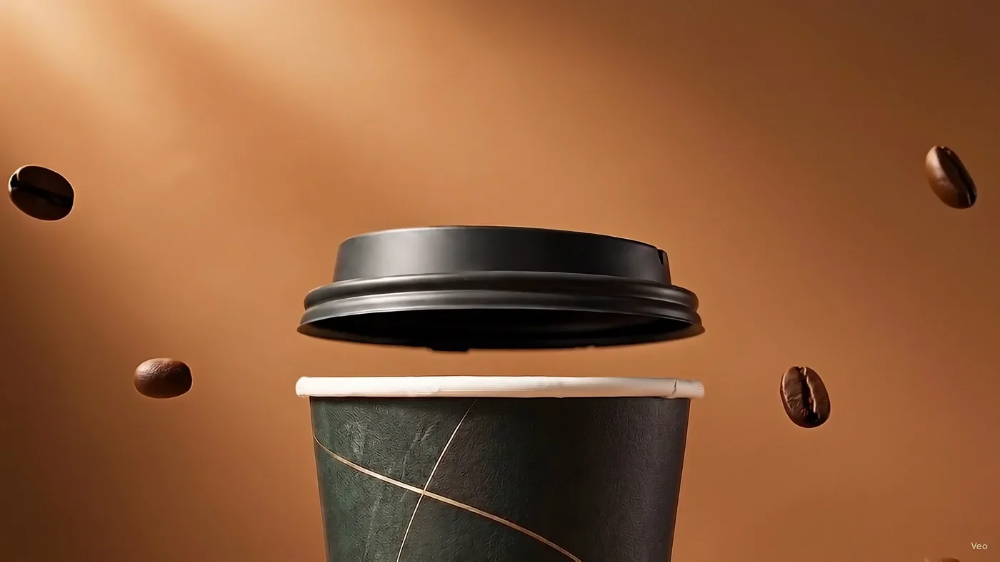
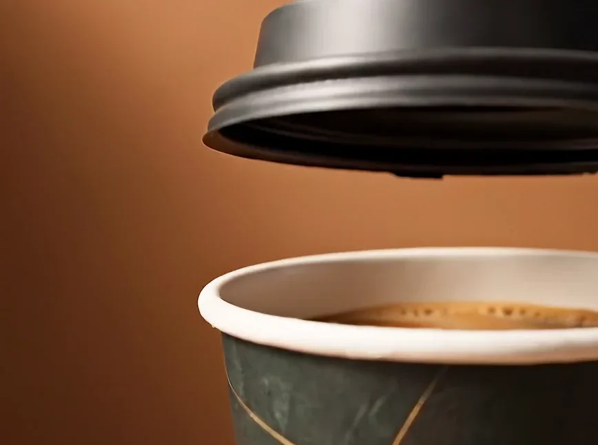
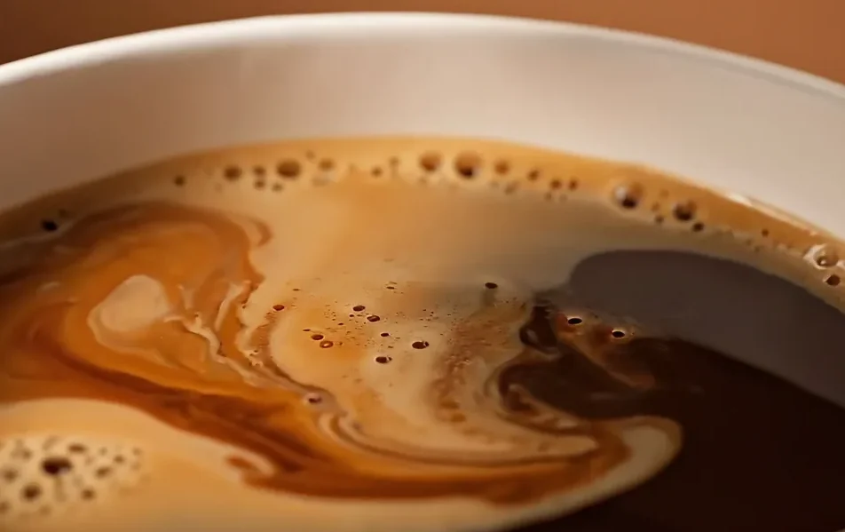
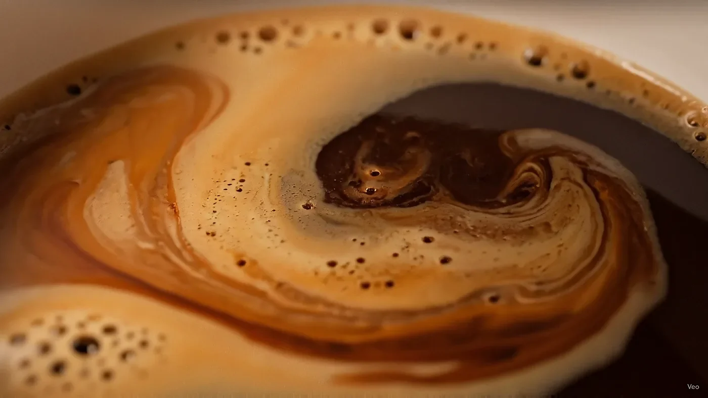
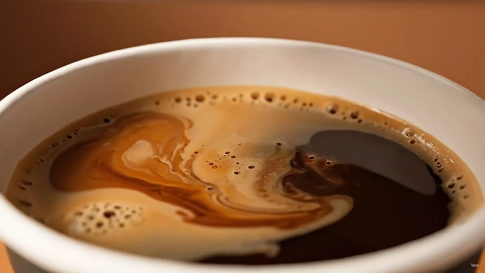
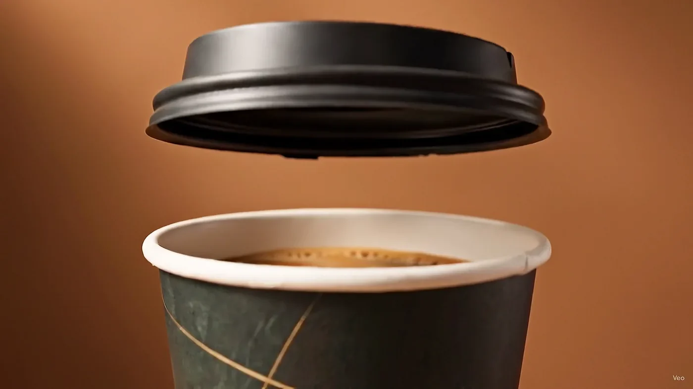
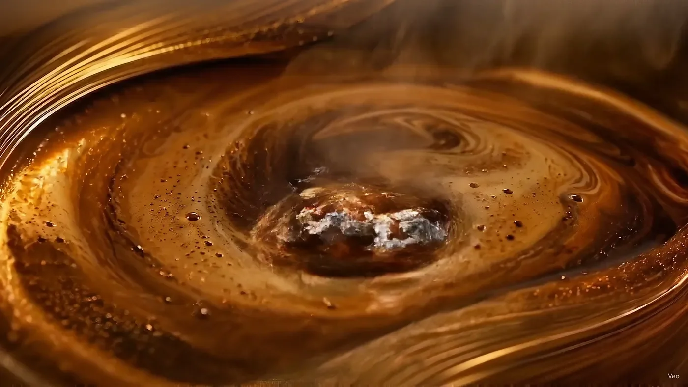

EMBER COFFEE
Origin
Built for mornings already in motion.
EMBER started with a simple itch: coffee that could feel as intentional outside the café as it does inside one. We roast in small batches and make the ritual easy to carry.

Craft — 01
Roasted for depth.
A darker silhouette, a softer landing. Notes of cacao, toasted sugar, and a gentle fruit brightness keep the cup layered from first sip to last.

Craft — 02
Designed for the hand.
The lid rises cleanly. The copper line catches the light. Every surface is considered because the moments between destinations deserve a little ceremony.

100%
Arabica coffee
01
Daily ritual
24h
Freshness window
The blend
| Profile | Dark chocolate · toasted sugar |
| Roast | Medium-dark |
| Origin | Seasonal single-estate lots |
| Process | Washed and natural |
| Format | Whole bean · ground to order |
“A coffee ritual with the volume turned down.”Early owner · Lisbon



